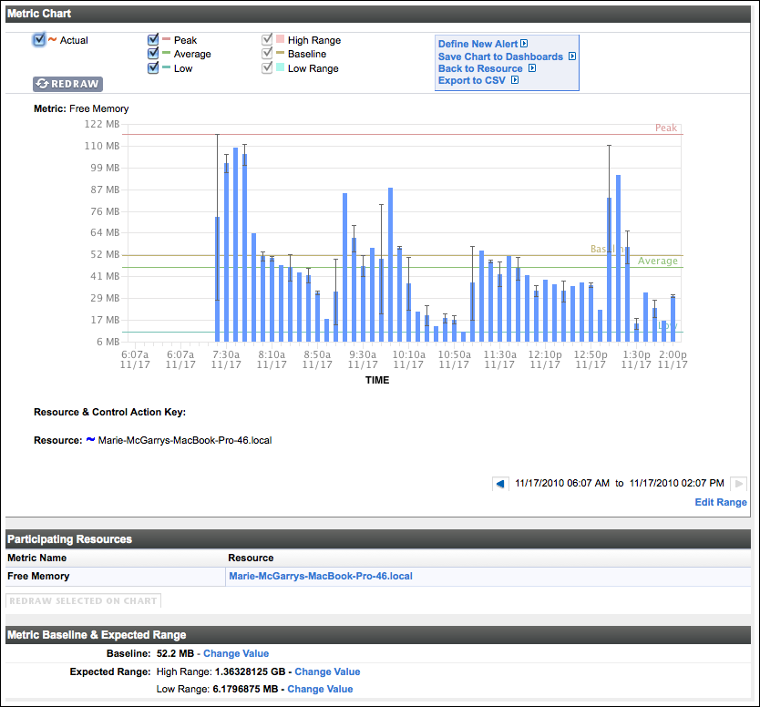

This page describes how metrics are categorized in VMware vFabric™ Hyperic®, how metric baselines are calculated and used, and default metric collection settings.
Metric Categories
Availability
In Hyperic, a resource is "available" when it is ready to service requests. More specifically, a platform is available if the HQ Server can reach it. For other inventory types, HQ issues a query or a request to the resource to determine its availability. If a resource that is part of an application is unavailable, Hyperic considers the entire application to be unavailable. A managed resource's availability is displayed as follows:
| Availability Icon Color | Availability Icon | State | Definition |
|---|---|---|---|
| Green |  |
Up | For an individual resource, indicates that its availability status is "up". For a group, indicates that none of the group members has availability status of "down". |
| Yellow |  |
Warn | This state is valid for a group only. It indicates that (1) one or more group members, but not all members, have the availability state of "down", and (2) the remaining members have status "green". |
| Blue |  |
Maintenance/Paused | This icon appears only for a VM or a group of VMs. For an individual VM indicates it is paused. For a group, indicates that all VMs in the group are paused. |
| Red |  |
Down | For an individual resource, indicates that its availability status is "down". For a group, indicates that all members of the group have either availability status "red" or "unknown". |
| Grey |  |
Unknown | For an individual resource, indicates that its availability is unknown. For a group, indicates that the availability of at least one of the members is unknown. |
| Blue |  |
Suspended/Powered Off | This icon appears only for a VM or a group of VMs. For an single VM indicates it is suspended or powered off. For a group of VMs, indicates that all VMs in the group are suspended or powered down. |
When HQ notifies you that an application is unavailable, you can drill down into the resources that make up that application in order to determine which resource (such as a web server, application server, or database) is causing the availability problem.
Throughput
HQ can measure throughput for each managed resource. For Web servers and application servers, throughput is typically measured as bytes served, bytes received, number of requests, and number of responses over a user-specified period of time (minutes, hours, days). For databases, throughput is typically measured as the number of requests processed or active connections over a specified period of time.
Utilization
Hyperic HQ can measure utilization rates for the platforms and servers that make up an Application. Examples of utilization include number of sessions created and destroyed, number of loaded or reloaded servlets, JVM total, used, and free memory, EJB creates, removes, loads, stores, and so on.
You can examine the capacity of an entire platform and measure individual utilization of the servers on those platforms. Using Hyperic HQ, you can pinpoint underutilized resources by establishing minimum utilization thresholds on a per platform basis. You can also determine where Application bottlenecks occur by examining utilization rates between disk, memory, CPU, and network, and then apply capacity appropriately.
Performance
A variety of metrics are categorized as performance metrics in Hyperic. Performance metrics are often measured in units of time, the milliseconds spent performing a type of operation, or the length of time that a threshold value was reached. Some performance metrics take an integer value - for instance the length of a work queue.
Metric Value Types
- Dynamic — Value may go up or down over time. CPU utilization is an example.
- Static — Value does not change over time. A time stamp is an example.
- Trends Up — Value always increases. For metrics whose values trend upwards, the rate of change is of interest, so Hyperic automatically creates a secondary metric: a per-minute rate measurement. If this rate metric has a defaultOn attribute set to true, the defaultOn attribute for the original metric is set to false (so that only the rate metric will be displayed, not the original metric). To disable an automatically generated rate metric, set its rate attribute to none.
- Trends Down — Value always decreases.
Baselines
Available only in vFabric Hyperic
Baselines — values that represent the norm for resource behavior — help you quickly identify problems with your resources. With baselines, you can automate metric analysis and configure alert conditions based on how a metric varies from baseline values. Hyperic automatically calculates the baseline values for all dynamic metrics.
Uses for Baselines in Hyperic
Baselines can help you provide:
- Trend Analysis: The most common use of baselining is as a performance management tool for trending analysis. Using Hyperic, you establish and retain the same metric baseline value over a specific period of time, then include the baseline when you chart the current values of the metric. You can then identify trends that will help you to estimate future performance or needs.
- Service-Level Management: To manage service-level agreements, you measure actual performance against agreed-upon minimum service-level values. Using Hyperic, you specify the acceptable high and low values for the metric then include this range of acceptable values when you chart the current values of the metric.
- Exception Management: You can monitor application health by defining an alert based on either the baseline, the high, or the low metric values. For example, you can set up an alert that triggers when the metric value is more than 25% of the baseline value.
Baselines in the Hyperic User Interface
Baseline values for a metric are indicated on a chart for the metric. A chart for a metric is displayed when you click a metric's name on the resource's Monitor page - either in the Indicators or Metric Data tab.
A metric chart, like the example shown below, provides two sets of metric statistics:
- Low, Average, and Peak - these lines indicate that low, average, and high values for the metric for the current display range.
- Low Range, Baseline, and High Range - this lines reflect baseline values that were calculated (or specified) as the expected low, normal, and high values for the metric.

How a Baseline is Calculated
Hyperic continuously and automatically calculates the baselines for dynamic metrics it collects for a resource: it averages the observed metric values over a user-specified time frame. A baseline value for a metric becomes more accurate as more data is collected. Hyperic calculates the baseline values based on the frequency of calculation, the set of metrics to consider, and the minimum number of data points to use for calculation. You can change these values and thereby change how baselines are calculated.
For more information, see Configure Metric Baselines.
Default Metric Collection Settings
Metric collection defaults are set at the resource level and apply to all resources in inventory of that type.
Although you can modify metric collection settings for an individual resource, those settings will be over-written the next time the default metric collect for that resource type is updated. Changes at the resource type level will apply to all resources of the type.
Default metric collection and alert definitions for a resource type can be viewed and edited by an authorized user on the Monitoring Defaults page for a resource type.